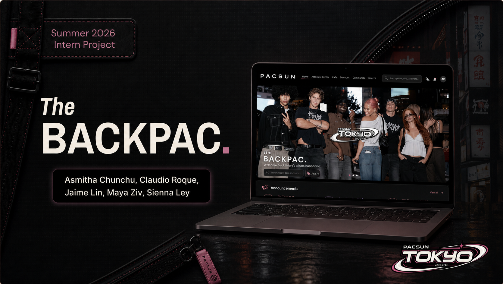
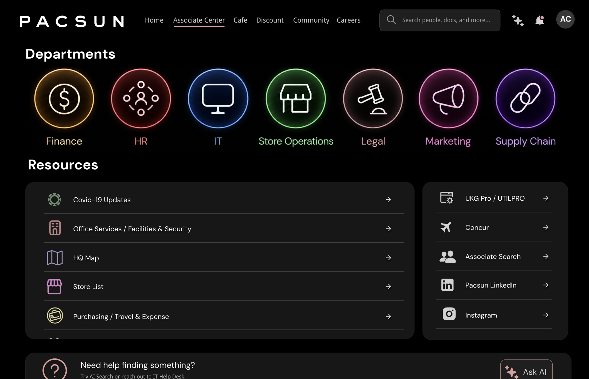
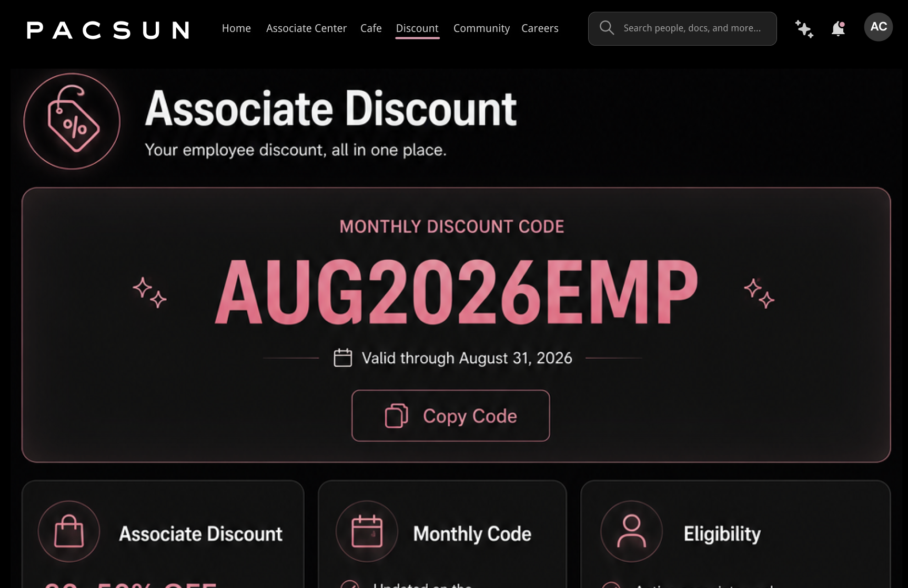

01
Centralize Resources
Associates needed fewer places to check, so I grouped department pages, HR resources, travel tools, associate search, social links, and support paths into a clearer navigation model.
Pacsun · Internal SaaS Platform
A high-fidelity internal employee platform concept introducing AI-powered knowledge retrieval, department pages, internal communication, and faster access to associate resources.

Problem
Pacsun teams needed a clearer place to find associate tools, department resources, company updates, discounts, announcements, and support links. The challenge was to make the intranet feel useful for daily employee tasks while still being realistic for internal rollout.
Opportunity
I framed The BackPac as an internal SaaS-style platform: a searchable workspace where associates could move between department pages, employee resources, discount tools, AI-assisted help, and communication updates without feeling lost.
Ownership
I translated user research into a product vision and incorporated 15+ user-centered features into a high-fidelity Figma prototype, including AI-powered knowledge retrieval, department hubs, internal announcements, associate search, discount access, resource directories, and support pathways.
Design Strategy
The interface emphasizes clear department entry points, persistent search, grouped resource lists, employee discount access, internal communication, and lightweight AI support so associates can get to the right tool without digging.


01
Associates needed fewer places to check, so I grouped department pages, HR resources, travel tools, associate search, social links, and support paths into a clearer navigation model.
02
I designed screens for department discovery, monthly discount codes, internal announcements, resource directories, search, and AI assistance so the concept felt like a usable internal platform.
03
I evaluated the concept through technical, financial, and operational constraints so the presentation was grounded in what Pacsun could realistically build.
Outcome
The final concept turned The BackPac into a prioritized internal platform vision: department pages organized resources by team, AI search gave associates a faster way to retrieve policy and support information, and communication modules surfaced announcements without burying them in separate tools. I paired each feature area with technical, financial, and operational considerations so the executive presentation showed not only what the platform could become, but how Pacsun could phase it into a realistic build.